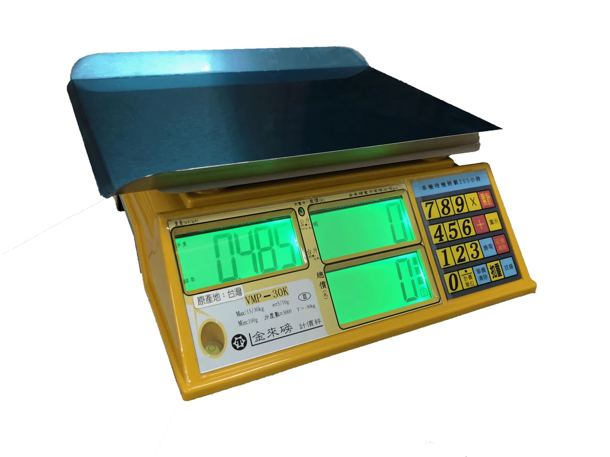
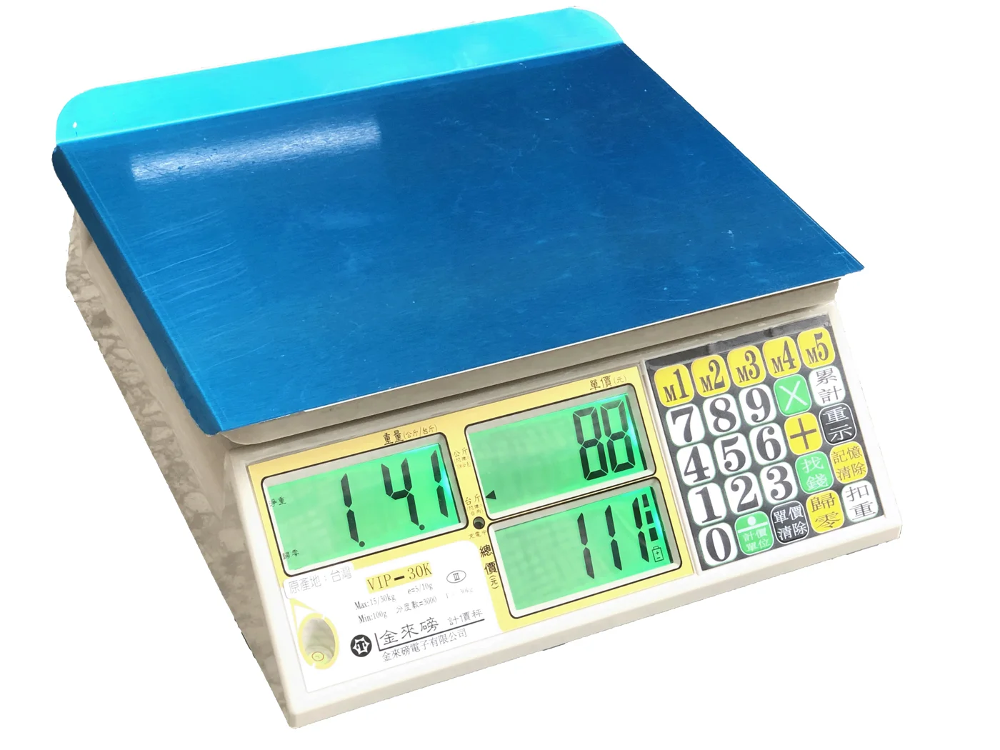

計價秤

PONI SCALE / 計價秤
VIP-30K 超大字體計價電子秤
超大字體款計價秤，讀數清晰不費力，適合光線昏暗或需快速辨識之作業環境。
專人報價・電話詢價
規格、價格與供貨狀況，歡迎直接與我們聯繫。
產品特色
- 超大字體清晰顯示：特大 LCD 數字，光線昏暗的攤位或夜市也能快速讀取，減少交易誤差。
- 高亮度背光輔助：內建背光，夜間或清晨使用依然清晰可見。
- 高精準度感應器：秤重範圍 0~30 公斤，精確到 5 公克，符合商用標準。
- 不鏽鋼秤盤：耐用、防鏽、易清潔，適合食品及潮濕環境。
- 長效充電電池：續航力達 40 小時，可長時間外出擺攤，也可插電使用。
- 台灣製造，品質保證：提供一年保固與永久校正服務。
適用場合：菜市場、夜市攤位、漁市、中藥行、蔬果行
EXPLORE MORE
全部商品 →